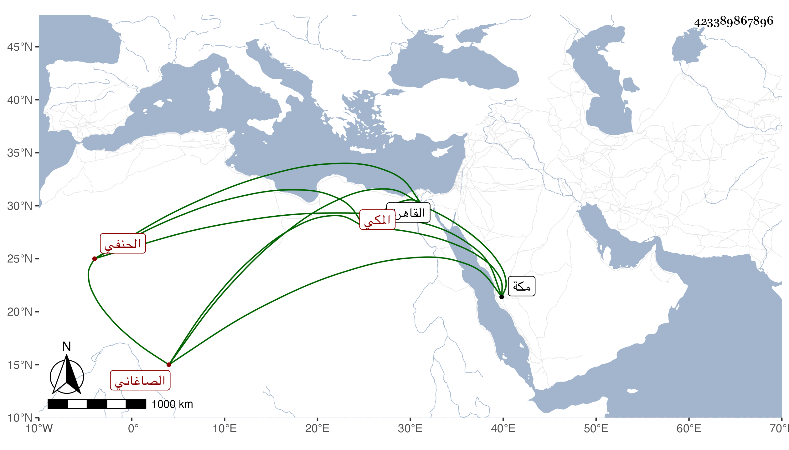

0902Sakhawi.DawLamic.ITO20230111-ara1.EIS1600.423389867896
Biography ID: 423389867896
23
علي بن محمد بن محمد بن أحمد بن محمد بن محمد أبو الحسن بن الغياث أبي الليث بن الرضي أبي حامد الصاغاني المكي الحنفي الآتي أبوه وجده . ولد في ظهر يوم الخميس حادي عشر رجب سنة سبعين وثمانمائة بمكة ونشأ بها فحفظ القرآن وصلى به في المقام الحنفي سنة إحدى وثمانين ثم حفظ أربعي النووي وألفية العراقي والعمدة في أصول الدين والمنار في أصول الفقه كلاهما لحافظ الدين النسفي والمجمع في الفقه لابن الساعاتي وألفية ابن ملك والتلخيص للقزويني والتهذيب في المنطق للتفتازاني وعرضها على كاتبه وغيره ، وسمع على جملة وتفهم على أبيه وغيره وحضر دروس القاضي وجماعة وزوجه أبوه ، ولم يلبث أن مات فقدم القاهرة في أثناء سنة خمس وتسعين وقرأ على البرهان الكركي والشمس الغزي الذي كان قاضيا والصلاح الطرابلسي وابن الديري في الفقه وأصوله والعربية وأذنوا له وكذا قرأ علي من أول القول البديع إلى أثناء الباب الثاني منه وسمع على قطعة من سيرة ابن هشام وغير ذلك وحضر دروس الزيني زكريا والقاضي الحنفي في آخرين وقرأ على عبد الحق السنباطي وأخذ عن عبد النبي المغربي والنور البحيري ثم الخطيب الوزيري المالكيين في مجاورتهم ورأيت منه براعة ومشاركة ولو توجه كما ينبغي للاشتغال لكان مرجوا .
